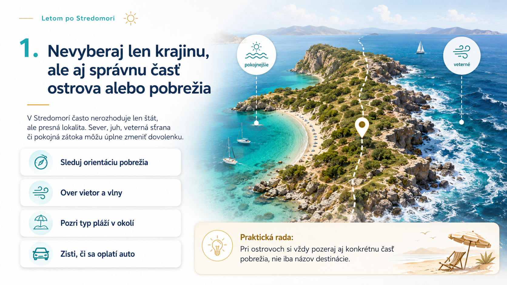
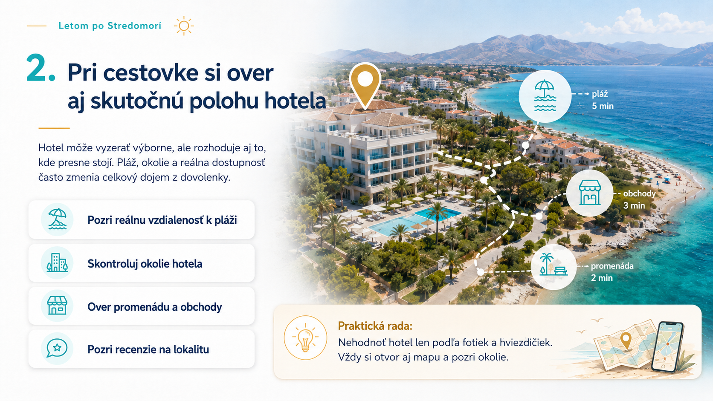
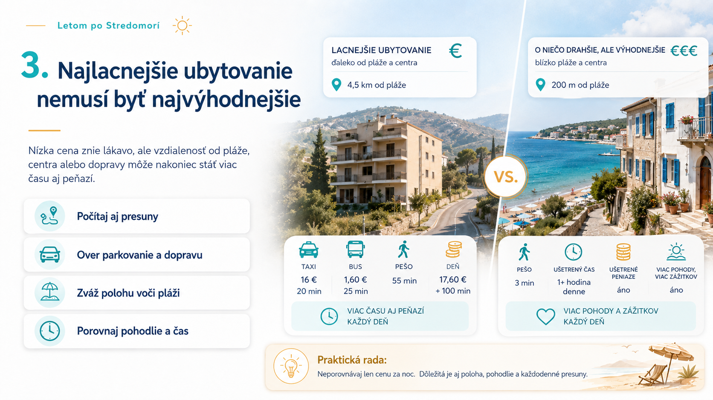
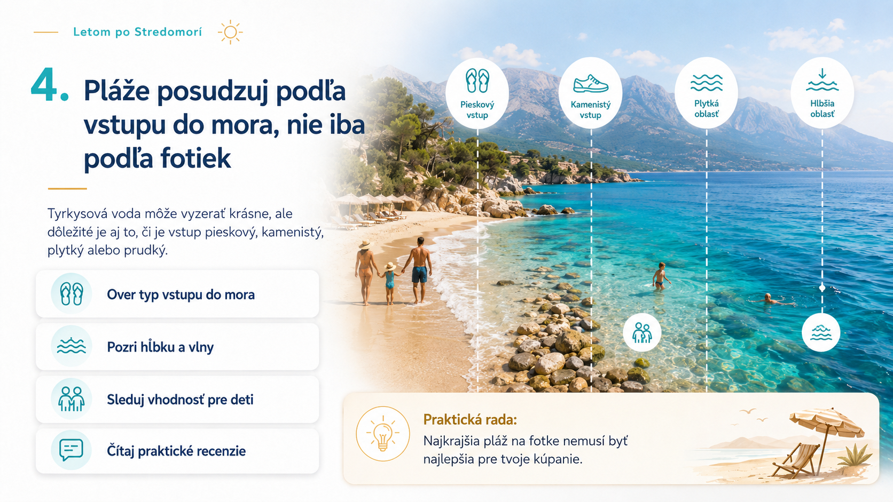
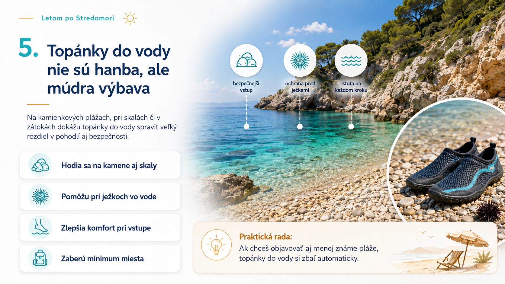
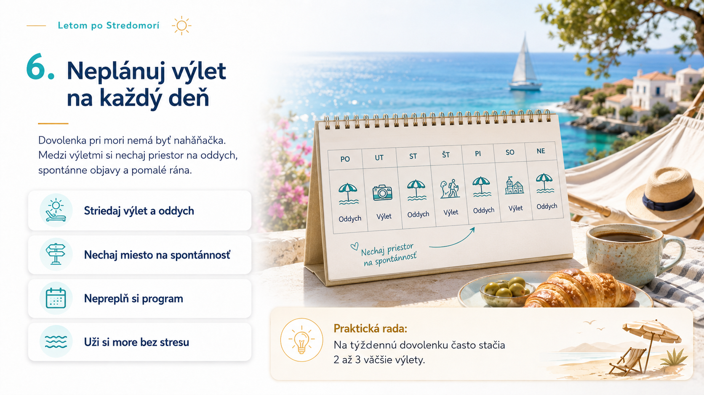
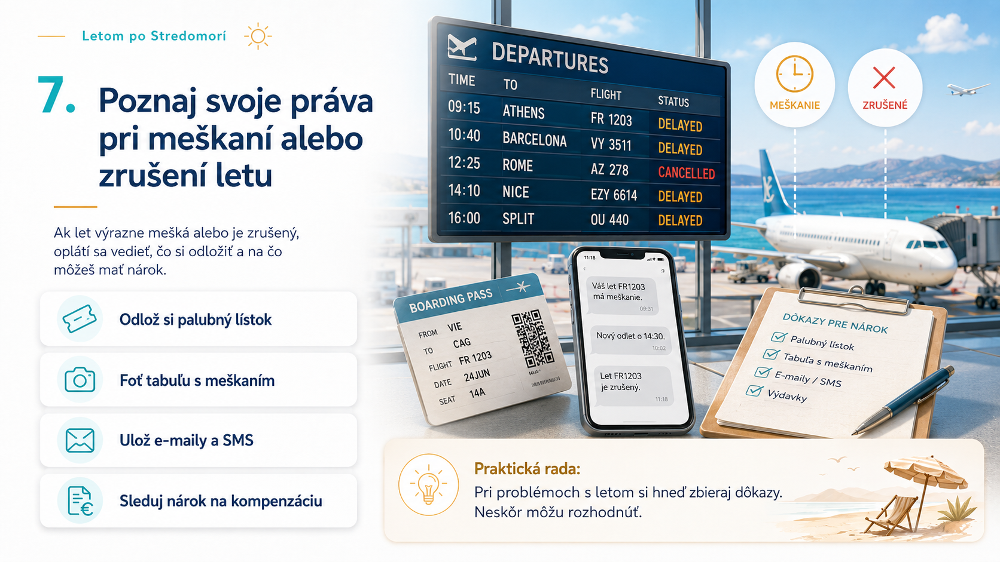
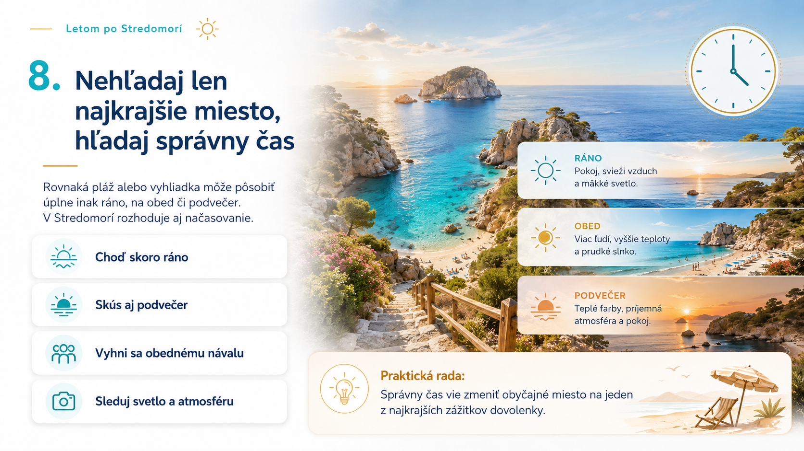

Stredomorie je krásne, ale pri plánovaní dovolenky sa ľudia často sústredia len na cenu, hotel, pláž a termín. To je prirodzené. Lenže skutočný rozdiel medzi pokojnou dovolenkou a dovolenkou plnou drobných sklamaní často robia detaily.
Poloha hotela, čas návštevy pláže, vstup do mora, vietor, presuny, poistenie, dôkazy pri meškaní letu a tempo programu vedia zmeniť celý dojem z cesty. Tento článok je redakčný cestovateľský prehľad praktických odporúčaní pre celé Stredomorie, nie osobný denník z jednej krajiny.
1. Nevyberaj len krajinu, ale aj správnu časť ostrova alebo pobrežia
Pri ostrovoch a pobrežných oblastiach často nerozhoduje iba názov krajiny. Jedna časť ostrova môže byť pokojná, druhá veterná. Niekde sú lepšie pláže, inde príjemnejšie večerné prechádzky, dostupnosť obchodov alebo výlety bez auta.
Pred rezerváciou si pozri orientáciu pobrežia, typ pláží, vietor, vlny a to, či sa v danej oblasti dá fungovať pešo. Ak chceš objavovať ostrov alebo pobrežie aktívnejšie, zisti aj to, či budeš potrebovať auto. Rozdiel medzi dvoma letoviskami môže byť väčší, než sa zdá z fotiek.

2. Pri cestovke si over aj skutočnú polohu hotela
Aj pri dovolenke cez cestovnú kanceláriu nestačí pozrieť hviezdičky a pekné fotografie. Otvor si mapu, pozri vzdialenosť k pláži, cestu k moru, okolie hotela, promenádu, obchody a recenzie na konkrétnu lokalitu.
Hotel môže vyzerať dobre, ale ak je od mora ďaleko, pri rušnej ceste alebo bez príjemného okolia, dovolenka bude pôsobiť úplne inak. Naopak, jednoduchší hotel s výbornou polohou môže byť pre bežnú dovolenku praktickejší než krajšie ubytovanie na zlom mieste.

3. Najlacnejšie ubytovanie nemusí byť najvýhodnejšie
Najnižšia cena za noc neznamená automaticky najlepšiu hodnotu. Lacnejšie ubytovanie ďaleko od pláže, centra alebo zastávky môže každý deň priniesť viac presunov, taxi, autobusov, parkovania a strateného času.
Pri porovnávaní si skús položiť jednoduchú otázku: koľko ma bude stáť cesta k tomu, kvôli čomu tam idem? Ak chceš more, večernú promenádu a jednoduché presuny, dobrá poloha môže ušetriť viac než pár eur na ubytovaní. Do skutočnej ceny dovolenky patrí aj pohodlie, čas a energia.

4. Pláže posudzuj podľa vstupu do mora, nie iba podľa fotiek
Tyrkysová voda na fotke je skvelá, ale pre kúpanie je dôležité aj to, ako sa do mora vstupuje. Piesok, kamene, šmykľavé skaly, hĺbka, vlny a prúdy vedia rozhodnúť, či bude pláž pohodová pre rodinu, starších ľudí alebo menej skúsených plavcov.
Pri recenziách hľadaj praktické výrazy ako kamienkový vstup, plytké more, vlny, topánky do vody, vhodné pre deti alebo rýchlo sa zvažuje. Najkrajšia pláž na fotke nemusí byť najlepšia pre tvoje kúpanie.

5. Topánky do vody nie sú hanba, ale múdra výbava
Topánky do vody sa hodia na kamienkových plážach, pri skalách, v zátokách, na prírodných vstupoch do mora a na miestach mimo hotelového rezortu. Nie sú dramatická výstraha, skôr malá poistka pohodlia.
Zaberú málo miesta, nestoja veľa a môžu výrazne zlepšiť prvý kontakt s morom. Ak plánuješ objavovať menej známe pláže alebo zátoky, daj ich do batožiny automaticky. V Stredomorí sa často oplatia viac než ďalší módny doplnok.

6. Neplánuj výlet na každý deň
Dovolenka pri mori nemá byť naháňačka. Pri týždňovej dovolenke často stačia dva až tri väčšie výlety. Medzi ne nechaj dni na oddych, kúpanie, pomalé ráno, spontánny objav alebo obyčajnú večernú prechádzku.
Menej programu často znamená viac zážitkov, pretože človek má čas vnímať miesto, nie iba presúvať sa medzi bodmi v zozname. Pri cestovaní s deťmi, vo veľkých horúčavách alebo bez auta je rozumné tempo ešte dôležitejšie.

7. Poznaj svoje práva pri meškaní alebo zrušení letu
Pri výraznom meškaní alebo zrušení letu v rámci pravidiel EÚ môže mať cestujúci podľa situácie nárok na pomoc alebo kompenzáciu. Neznamená to, že nárok vzniká vždy. Záleží na konkrétnom lete, dĺžke meškania a dôvode problému.
Prakticky sa oplatí odkladať palubné lístky, rezervácie, SMS, e-maily, fotografie informačných tabúľ a časy odletu alebo príletu. Tento text nie je právne poradenstvo, ale pripomienka, že pri problémoch sa oplatí mať dôkazy a presný nárok si overiť podľa konkrétneho prípadu.

8. Nehľadaj len najkrajšie miesto, hľadaj správny čas
Rovnaká pláž alebo vyhliadka môže byť úplne iná ráno, na obed a podvečer. Ráno býva menej ľudí, lepšie svetlo a pokoj. Na obed môže prísť horúčava, tvrdé slnko a najväčší nával. Podvečer má veľa miest krajšiu atmosféru a mäkšie farby.
V Stredomorí preto nerozhoduje iba miesto, ale aj načasovanie. Ak chceš pekné fotky, pokojnejšiu atmosféru alebo príjemnejšie kúpanie, skús najznámejšie miesta navštevovať mimo najväčšej špičky.

Dobrá dovolenka vzniká z malých rozhodnutí
Dobrá dovolenka v Stredomorí nie je len o najkrajšej fotke alebo najnižšej cene. Často rozhodujú malé veci: správna poloha, vhodná pláž, rozumné tempo, praktická výbava a dobré načasovanie.
Keď si tieto detaily overíš ešte pred cestou, zostane viac priestoru na to najlepšie: more, jedlo, večerné prechádzky, výhľady a pokojný dovolenkový rytmus.